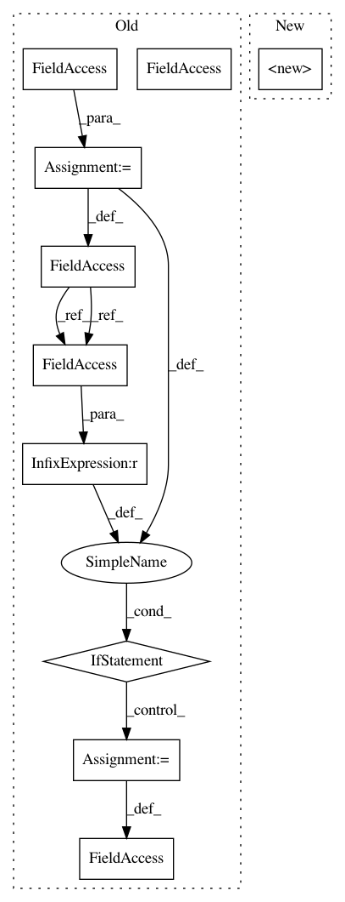

530ae51767d22383191574862c1e31dd6d070344,unbalanced_dataset/over_sampling/over_sampler.py,OverSampler,__init__,#OverSampler#,33
Before Change
if (kwargs.pop("indices_support", False)):
raise ValueError("No indices support with this method.")
self.method = method
if (self.method == "gaussian-perturbation"):
self.mean_gaussian = kwargs.pop("mean_gaussian", 0.0)
self.std_gaussian = kwargs.pop("std_gaussian", 1.0)
def resample(self):
Over samples the minority class by randomly picking samples with
replacement.
After Change
super(OverSampler, self).__init__(ratio=ratio,
random_state=random_state,
verbose=verbose)
@abstractmethod
def fit(self, X, y):
Find the classes statistics before to perform sampling.
In pattern: SUPERPATTERN
Frequency: 3
Non-data size: 10
Instances
Project Name: scikit-learn-contrib/imbalanced-learn
Commit Name: 530ae51767d22383191574862c1e31dd6d070344
Time: 2016-05-18
Author: glemaitre@visor.udg.edu
File Name: unbalanced_dataset/over_sampling/over_sampler.py
Class Name: OverSampler
Method Name: __init__
Project Name: rwth-i6/returnn-experiments
Commit Name: eae3bda678ff1e626f0a954403e972a565dc06e8
Time: 2020-01-07
Author: rossenbach@i6.informatik.rwth-aachen.de
File Name: 2019-asr-synthetic-data/sisyphus_project/recipe/returnn/search.py
Class Name: RETURNNSearchFromFile
Method Name: __init__
Project Name: scikit-learn-contrib/imbalanced-learn
Commit Name: 530ae51767d22383191574862c1e31dd6d070344
Time: 2016-05-18
Author: glemaitre@visor.udg.edu
File Name: unbalanced_dataset/over_sampling/over_sampler.py
Class Name: OverSampler
Method Name: __init__
Project Name: rwth-i6/returnn-experiments
Commit Name: eae3bda678ff1e626f0a954403e972a565dc06e8
Time: 2020-01-07
Author: rossenbach@i6.informatik.rwth-aachen.de
File Name: 2019-asr-synthetic-data/sisyphus_project/recipe/returnn/training.py
Class Name: RETURNNTrainingFromFile
Method Name: __init__